리눅스마스터-2급 (2014-12-06 기출문제)
1과목: 리눅스 운영 및 관리
1. 다음 명령어를 실행한 후 생성된 ihd 디렉터리의 권한으로 알맞은 것은?
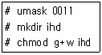
- drwxrw-rw-
- d----wx--x
- drwx-w---x
- drwx-wx—x
(정답률: 84%)
2. 다음 중 /etc/fstab의 항목에 대한 설명으로 알맞은 것은?
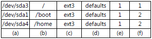
- (a) : 장치파일명만 허용된다.
- (c) : nfs와 같은 네트워크 파일 시스템은 이항목에 기입하지 않고 /etc/exports와 같은 nfs 전용 설정파일에 기록 후 사용한다.
- (d) : defaults 옵션을 사용하면 자동 마운트 기능을 사용할 수 없다.
- (f) : 이 값에 0을 기입하면 부팅 시 fsck 명령어로 검사하지 않는다.
(정답률: 62%)

3. 다음 중 파일이나 디렉터리에 설정된 접근권한을 변경할 때 사용하는 명령어로 알맞은 것은?
- chgrp
- chmod
- chfn
- chown
(정답률: 86%)
4. 다음 중 리눅스시스템에 새로운 디스크를 추가한 후 파일시스템을 생성하여 마운트 하는 단계에서 사용되는 명령어로 가장 거리가 먼 것은?
- mount
- fsck
- fdisk
- mkfs
(정답률: 65%)
5. 다음 결과를 나타내는 명령어로 가장 알맞은 것은?
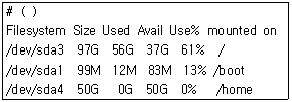
- du –ush
- du -sm
- df –fh
- df -m
(정답률: 63%)
6. ihd 사용자에 설정된 quota 정보를 ihd2 사용자에게도 동일하게 적용하려고 할 때 알맞은 것은?
- setquota -t ihd ihd2
- setquota -c ihd ihd2
- edquota -p ihd ihd2
- edquota -c ihd ihd2
(정답률: 60%)
7. 다음 중 네트워크와 가장 관계가 깊은 파일시스템으로 알맞은 것은?
- NTFS
- CIFS
- ext3
- ext4
(정답률: 51%)
8. 다음 중 디스크의 파티션을 추가, 삭제, 확인할 때 사용하는 명령어로 알맞은 것은?
- format
- diskpart
- fdisk
- pdisk
(정답률: 85%)
9. 다음 중 cd 명령을 사용하여 디렉터리 안으로 들어가려고 할 때 설정하는 권한으로 알맞은 것은?
- r
- w
- x
- s
(정답률: 63%)
10. 다음 설명에 해당하는 명령어로 알맞은 것은?
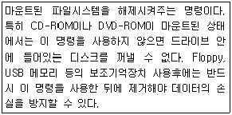
- mount
- dismount
- unmount
- umount
(정답률: 73%)
11. 다음 중 fstab의 첫 번째 필드에 들어가는 설정으로 틀린 것은?
- /root
- /dev/sda1
- LABEL=/boot
- UUID=8421ba18-4702-4120-9756-02ca8e308577
(정답률: 63%)
12. 현재 리눅스시스템에서 명령어의 결과 등이 영문으로 표시되고 있다. 다음 중한글로 출력하길 원할 때 설정해야 할 셸 환경변수로 알맞은 것은?
- LOCALE
- LANGUAGE
- LANG
- LOCAL
(정답률: 83%)
13. 다음과 같이 명령어를 내렸을 때 프롬프트가 > 와 같이 표시되었다. 이 프롬프트를 2> 와 같이 변경 하고자 할 때 설정하는 셸 환경변수로 알맞은 것은?
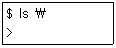
- PS1
- PS2
- PROMPT
- 2NDPMT
(정답률: 66%)
14. 다음 ( 괄호 )에 해당하는 쉘로 알맞은 것은?(문제 오류로 실제 시험에서는 모두 정답처리 되었습니다. 여기서는 1번을 누르시면 정답 처리 됩니다.)
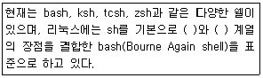
- zsh , tcsh
- zsh, csh
- ksh , tcsh
- ksh , csh
(정답률: 59%)
15. 다음 중 마지막에 실행한 명령부터 세어 8번째 전에 사용했던 명령어를 다시 실행하고자 할 때 사용 할 수 있는 명령어로 알맞은 것은?
- history –8
- history 8
- !-8
- !8
(정답률: 54%)
16. 다음 중 리눅스의 csh에 대한 설명으로 알맞은 것은?
- 본셸을 기반으로 하여 GNU 프로젝트에 의해 개발되었다.
- AT&T 사의 데이비드 콘이 개발하였고, 명령어 완성기능, 히스토리 기능 등을 제공한다.
- 현재 리눅스의 표준 셸이다.
- 버클리 대학의 빌 조이가 개발한 것으로 C언어를 기반으로 만들어졌다.
(정답률: 78%)
17. 다음 중 사용자가 홈 디렉터리가 아닌 곳에서 홈 디렉터리로 이동하려고 할 때 틀린 것은?
- cd $HOME
- cd ~
- cd .
- cd
(정답률: 64%)
18. 다음 중 명령어에 기본적으로 설정된 옵션을 해체할 때 사용하는 명령어로 알맞은 것은?
- disalias
- dalias
- ualias
- unalias
(정답률: 82%)
19. 다음 중 시그널의 종류와 설명으로 틀린 것은?
- SIGINT(INT) : 키보드로부터 오는 인터럽트 시그널로 실행을 중지시킨다.
- SIGQUIT(QUIT) : 키보드로부터 오는 실행 중지 시그널이다.
- SIGKILL(KILL) : 무조건 종료, 즉 프로세스를 강제로 종료시키는 시그널이다.
- SIGSTOP(STOP) : Terminate의 약자로 가능한 정상 종료시키는 시그널이다.
(정답률: 70%)
20. 다음 top명령에 관한 설명으로 틀린 것은?
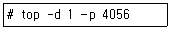
- 프로세스의 상태와 CPU, 메모리, 부하 상태 등을 화면에 출력한다.
- -d 옵션을 사용하여 1초 간격으로 실시간으로 화면에 출력한다.
- PID가 4⑤6인 프로세스만을 실시간으로 화면에 출력한다.
- 실행 상태에서 다양한 명령을 입력하여 프로세스 상태를 출력하거나 제어할 수 없다.
(정답률: 76%)
21. 다음 중 ( 괄호 ) 안에 들어갈 내용으로 알맞은 것은?
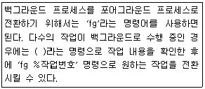
- bg
- jobs
- kill
- find
(정답률: 82%)
22. 다음 중 pstree 명령어를 사용하여 실행한 명령 부분을 진하게 강조해서 출력할 때 사용하는 옵션으로 알맞은 것은?
- -a
- -h
- -n
- -p
(정답률: 65%)
23. 다음 중 top 실행상태에서의 명령으로 틀린 것은?
- r : Nice 값을 변경한다.
- k : kill 명령을 내린다.
- q : top을 종료한다.
- m : 프로세스와 CPU 항목을 on/off한다.
(정답률: 66%)
24. 다음 중 killall 명령어를 사용하여 시그널이 전송된 결과를 출력할 때 사용하는 옵션으로 알맞은 것은?
- -l
- -w
- -v
- -s
(정답률: 49%)
25. 다음 중 ps 명령어를 사용하여 pid, tty, time, cmd 등을 출력 포맷으로 지정하는 옵션으로 알맞은 것은?
- -f
- -e
- -A
- -o
(정답률: 38%)
26. 다음 중 top 명령어 실행 후 Time 값으로 정렬하여 보여주는 명령으로 알맞은 것은?
- T
- M
- P
- h
(정답률: 79%)
27. 다음 중 ( 괄호 ) 안에 들어갈 내용으로 알맞은 것은?
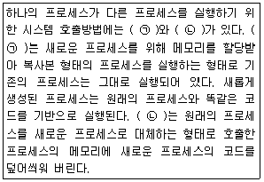
- (ㄱ) fork (ㄴ) exec
- (ㄱ) exec (ㄴ) fork
- (ㄱ) init (ㄴ) exec
- (ㄱ) fork (ㄴ) init
(정답률: 78%)
28. 다음 중 ( 괄호 ) 안에 들어갈 내용으로 알맞은 것은?
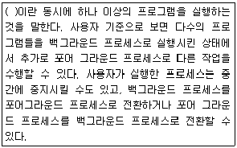
- 스케줄링
- 시그널
- 데몬
- 멀티태스킹(Multitasking)
(정답률: 75%)
29. 다음은 vi 편집기 실행에 대한 예이다. 관련 설명으로 알맞은 것은?
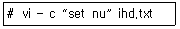
- ihd.txt 파일을 읽기 전용으로 파일을 연다.
- ihd.txt 파일을 열면서 행 번호를 붙여준다.
- ihd.txt 파일을 열면서 커서의 위치를 마지막 라인에 둔다.
- ihd.txt 파일을 열면서 set이라는 문자열이 있는 위치에 커서를 둔다.
(정답률: 80%)
30. 다음 중 emacs 편집기에서 커서를 아랫줄로 이동할 때 명령으로 알맞은 것은?
- [Ctrl]+[n]
- [Ctrl]+[e]
- [Ctrl]+[p]
- [Ctrl]+[f]
(정답률: 60%)
31. 다음 vi 편집기의 명령 중 현재 커서가 위치한 줄부터 +10줄까지 summer라는 문자열을 전부 autumn으로 치환할 때 알맞은 것은?
- :.,. -10s/summer/autumn/g
- :1,$ s/summer/autumn/g
- :1,$ s/summer/autumn/
- :.,.+10s/summer/autumn/g
(정답률: 79%)
32. 다음 중 pico 편집기에서 한 줄 삭제 후 붙여넣기 할 때 조합으로 알맞은 것은?
- [Ctrl]+[k] 후에 [Ctrl]+[u]
- [Ctrl]+[c] 후에 [Ctrl]+[k]
- [Ctrl]+[u] 후에 [Ctrl]+[g]
- [Ctrl]+[g] 후에 [Ctrl]+[c]
(정답률: 54%)
33. 다음 중 vi 편집기의 환경 설정을 등록하여 실행시에 계속적으로 지정한 설정이 사용가능하게 해주는 파일로 알맞은 것은?
- .exrc
- .bash_history
- .swap
- .rhosts
(정답률: 62%)
34. 다음 중 emacs 편집기에서 현재 편집중인 파일을 종료하고 새로운 파일을 편집하려고 할 때 입력하는 조합으로 알맞은 것은?
- [Ctrl]+[x] 후에 [Ctrl]+[c]
- [Ctrl]+[x] 후에 [Ctrl]+[s]
- [Ctrl]+[x] 후에 [Ctrl]+[f]
- [Ctrl]+[x] 후에 [Ctrl]+[h]
(정답률: 47%)
35. 다음의 조건일 때 ( 괄호 )안에 들어갈 내용으로 알맞은 것은?
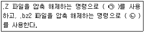
- (ㄱ) uncompress (ㄴ) bunzip2
- (ㄱ) bunzip2 (ㄴ) uncompress
- (ㄱ) uncompress (ㄴ) gunzip
- (ㄱ) gunzip (ㄴ) uncompress
(정답률: 78%)
36. 다음 apt-get 옵션 중 remove 명령을 수행할 때 환경설정까지 같이 제거할 때 사용하는 옵션으로 알맞은 것은?
- --purge
- -y
- --remove
- --delete
(정답률: 58%)
37. 다음 중 gzip 패키지에 같이 들어 있는 명령으로 압축되어 있는 텍스트 파일의 내용을 확인할 때 사용하는 명령으로 알맞은 것은?
- bzip
- bunzip
- cat
- zcat
(정답률: 71%)
38. 다음 중 dpkg 명령의 결과에 대한 설명으로 알맞은 것은?
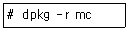
- mc 패키지를 제거하지만 환경 설정 파일은 제거되지 않는다.
- mc 패키지를 환경 설정 파일을 포함하여 모두 제거한다.
- mc 패키지를 풀기만 한다.
- mc 패키지에 대한 패키지 버전, 패키지 관리자등에 대한 정보를 출력한다.
(정답률: 55%)
39. 다음 중 yum에 대한 설명으로 틀린 것은?
- 환경 설정 파일은 /etc/yum.conf이다.
- 저장소(repository) 관련 파일들은 /etc/yum.repos.d 디렉터리에 저장된다.
- yum 관련 작업의 로그는 /var/log/yum.log에 저장된다.
- apt-get기반의 시스템에서 패키지를 손쉽게 설치한다.
(정답률: 67%)
40. 다음 rpm 명령어의 옵션 중 패키지 관련 문서 및 man 페이지 파일 정보를 출력할 때 옵션으로 알맞은 것은?
- -qf
- -qd
- -qR
- -qc
(정답률: 37%)
41. 다음 rpm으로 설치된 패키지를 검증 시 검증코드에 관한 설명으로 틀린 것은?
- S : 파일 크기 변경
- M : 파일 모드 변경
- L : 링크 파일 경로 불일치
- G : 소유자 변경
(정답률: 65%)
42. 다음 gzip 옵션중 가장 빠른 압축옵션으로 알맞은 것은?
- -1
- -6
- -9
- -15
(정답률: 58%)
43. 다음 중 호스트에 설치된 물리적인 하드웨어 장치(PCI 등의 BUS, SCSI/IDE등의 디스크 컨트롤러,USB 등의 포터블 인터페이스들에 설치된 물리적인 장치)들의 리스트를 보여주는 명령어로 가장 거리가 먼 것은?
- lspci
- cat /proc/mdstat
- cat /proc/scsi/scsi
- cat /proc/bus/pci/devices
(정답률: 50%)
44. 리눅스 프린팅 시스템에 대한 설명으로 알맞은 것은?
- 리눅스 초기에는 LPRng를 기본으로 사용했으나, 최근 배포판에서는 CUPS라는 시스템을 추가로 사용하고 있다.
- 리눅스의 프린팅 시스템인 LPRng는 네트워크 프린터 서버 기능을 사용할 수 없다.
- CUPS는 애플에서 개발한 오픈소스 프린팅 시스템으로 유닉스 계열 운영체제의 시스템을 지원하기 위해 개발되었으며, 윈도우 등에서 사용되는 프린터는 사용할 수 없다.
- 리눅스시스템에 프린터를 직접 연결하면 병렬 포트에 연결시 /dev/lp0, USB포트에 연결시 /dev/lpusb0 장치파일이 생성된다.
(정답률: 53%)
45. 다음 중 오디오 CD에서 음악 파일을 추출할 때 사용하는 프로그램으로 알맞은 것은?
- sdcd
- cdparanoia
- cdplay
- xplaycd
(정답률: 75%)
46. 다음 중 리눅스 시스템의 스캐너 지원에 대한 설명으로 알맞은 것은?
- SANE은 GPL 라이선스로 리눅스 및 유닉스 계열을 지원하며, MS Windows 운영체제는 지원하지 않는다.
- SANE은 스캐너 등의 이미지관련 하드웨어를 사용할 수 있도록 해주는 API로써 하드웨어 드라이버는 포함하지 않는다.
- XSANE은 X-window에서 스캔 작업을 할 수 있지만, 이미지 수정기능을 갖고 있지 않기 때문에 수정작업은 GIMP와 같은 보정 소프트웨어를 사용하여야 한다.
- SANE은 Scanner Access Now Easy의 약자로써 sane-backends와 sane-fronteds 의 2개의 패키지로 배포된다. 평판스캐너, 핸드스캐너, 비디오 캠등 이미지 관련 하드웨어를 사용할 수 있게 해준다.
(정답률: 54%)
47. 리눅스 시스템의 프린팅 시스템으로 초기에는 LPRng를 사용하였다. LPRng 시스템에서 사용 하는 설정파일로 알맞은 것은?
- /etc/printcap
- /etc/cups/cupsd.conf
- /var/spool/lpd
- /proc/devices
(정답률: 61%)
48. 다음 중 리눅스에서 사용하는 프린트 관련 명령어로 틀린 것은?
- lpc
- lpp
- lpq
- lpr
(정답률: 78%)
2과목: 리눅스 활용
49. 다음 중 ( 괄호 )안에 들어갈 내용으로 알맞은 것은?
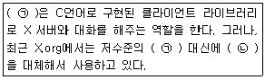
- (ㄱ) Xlib - (ㄴ) XCB
- (ㄱ) QT - (ㄴ) GTK+
- (ㄱ) XFree86 - (ㄴ) Xorg
- (ㄱ) KDE - (ㄴ) GNOME
(정답률: 71%)
50. 다음 중 데스크톱 환경으로 틀린 것은?
- KDE
- GNOME
- Mutter
- XFce
(정답률: 62%)
51. 다음 중 GNOME과 KDE의 데스크톱 환경에서 X 윈도를 강제 종료하기 위한 키의 조합으로 알맞은 것은?
- Ctrl + Alt + F1
- Ctrl + Alt + Enter
- Ctrl + Alt + Delete
- Ctrl + Alt + BackSpace
(정답률: 63%)
52. 최근에는 X 윈도 관련 개발을 할 때 Xlib의 기능을 포함하는 고수준의 라이브러리를 사용한다. 이때 사용되는 라이브러리로 알맞은 것은?
- tar
- motif
- apt-get
- cpio
(정답률: 53%)
53. 다음 중 X 윈도의 설명으로 틀린 것은?
- 네트워크 프로토콜에 기반을 둔 그래픽 사용자 인터페이스 환경이다.
- 다양한 종류의 컴퓨터에서 구동될 수 있을 정도로 이식성이 뛰어나다.
- X Server와 X Client의 서버/클라이언트 구조이다.
- 원격 연결(Remote Connection)은 지원하지 못한다.
(정답률: 74%)
54. 다음 중 xhost 명령을 이용하여 192.168.1.200 클라이언트를 X 서버에 접근 가능하도록 설정 할 때 알맞은 것은?
- xhost -a 192.168.1.200
- xhost +a 192.168.1.200
- xhost - 192.168.1.200
- xhost + 192.168.1.200
(정답률: 62%)
55. 다음 중 사용자가 X 윈도 실행 시에 관련 키 정보를 저장하는 파일로 알맞은 것은?
- .Xsessions
- .Xkeys
- .Xauthority
- .Xcfg
(정답률: 64%)
56. 다음 중 X 윈도 데스크톱 환경으로 틀린 것은?
- GNOME
- LXDE
- XFCE
- KRFB
(정답률: 55%)
57. 다음 중 IPv6의 특징으로 알맞은 것은?
- 주소 표시 공간이 32비트에서 256비트로 확장 되면서 거의 무한에 가까운 주소 제공한다.
- IP주소 확장으로 복잡성 증가의 이유로 호스트 주소 자동 설정을 지원되지 않는다.
- 전송효율을 목표로 다양한 정보를 담기 위해 IPv4와 비교하면 헤더 구조가 복잡하다.
- 패킷 출처 인증, 데이터 무결성 및 비밀 보장 기능을 IPv6 확장 헤더를 통해 적용 가능하다.
(정답률: 57%)
58. 다음 중 SSH의 옵션과 설명으로 알맞은 것은?
- -L : 현재 클라이언트 쪽에서 로그인한 계정이 아닌 다른 계정으로 접속할 때 사용한다.
- -a : 인증 에이전트의 전송을 허가한다.
- -N : 리모트 명령을 실행하지 않는다.
- -k : Kerberos 티켓 및 AFS 토큰의 전송을 허가한다.
(정답률: 35%)
59. 다음 중 주요 포트번호와 주요 사용 서비스가 알맞게 짝지어진 것은?
- 22 : Telnet에서 사용
- 23 : SSH에서 사용
- 25 : SMTP에 사용
- 80 : DNS에서 사용
(정답률: 66%)
60. 다음은 회선교환과 패킷교환 방식에 대한 기술 특성을 비교한 내용이다. 특성이 알맞게 짝지어 진 것은?
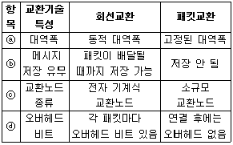
- ⓐ
- ⓑ
- ⓒ
- ⓓ
(정답률: 48%)
61. 다음 중 ( 괄호 )안에 들어갈 내용으로 알맞은 것은?
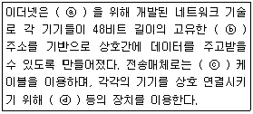
- ⓐ MAC - ⓑ UTP - ⓒ Switch - ⓓ LAN
- ⓐ Switch - ⓑ UTP - ⓒ MAC - ⓓ LAN
- ⓐ UTP - ⓑ Switch - ⓒ LAN - ⓓ MAC
- ⓐ LAN - ⓑ MAC - ⓒ UTP - ⓓ Switch
(정답률: 74%)
62. 다음 중 이더넷(Ethernet) 매체 종류와 배선 방식에 대한 설명으로 틀린 것은?
- 100BASE-TX : 100Mbps의 전송 속도에 전송 매체는 UTP-5 또는 STP를 사용
- 100BASE-FX : 100Mbps의 전송 속도에 전송 매체는 광케이블을 사용
- 1000BASE-T : 1000Mbps의 전송 속도에 전송 매체는 UTP-5를 사용
- 1000BASE-LX : 단파장의광섬유를사용하는규격으로 최대 220~550M까지 가능
(정답률: 57%)
63. 다음 중 삼바(SAMBA)에서 지원하는 프로토콜로 틀린 것은?
- SMB(Server Message Block)
- PICO
- NetBIOS
- LanManager
(정답률: 57%)
64. 다음 중 SSH에서 제공하는 기능으로 틀린 것은?
- 파일시스템 동기화
- 터널링(Tuenneling)
- X11 포워딩
- 원격지 컴퓨터 로그인 및 제어
(정답률: 43%)
65. 다음 중 썬더버드(Thunderbird)에 대한 설명으로 알맞은 것은?
- FTP 클라이언트 프로그램이다.
- 모질라 재단에서 개발되었다.
- 아직은 리눅스 OS만 지원한다.
- 웹킷 레이아웃 엔진(Webkit layout engine)을 이용하여 개발되었다.
(정답률: 49%)
66. 네트워크 카드를 커널에 인식시킨 후 IP 할당과 활성화를 위한 절차로 ifconfig 명령을 이용하려 한다. 다음 ( 괄호 )안에 들어갈 내용으로 알맞은 것은?
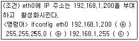
- ⓐ address - ⓑ tunnel - ⓒ activate
- ⓐ metric - ⓑ multicast - ⓒ enable
- ⓐ netmask - ⓑ broadcast - ⓒ up
- ⓐ mtu - ⓑ destination - ⓒ validate
(정답률: 69%)
67. 다음 중 netstat 명령을 이용하여 멀티캐스트 그룹 멤버의 정보를 출력하려 할 때 사용하는 옵션으로 알맞은 것은?
- -t
- -m
- -n
- -g
(정답률: 60%)
68. 다음 중 arp 명령의 옵션과 설명으로 알맞은 것은?
- -a : ARP 캐쉬 테이블에 저장된 특정 값의 속성을 변경한다.
- -r : ARP 캐쉬 테이블에 저장된 특정 MAC 주소를 삭제한다.
- -s : ARP 캐쉬 테이블에 저장된 특정 IP에 대한 MAC 주소를 변경한다.
- -n : IP 주소를 숫자 대신 심볼릭 호스트 명으로 변환하여 출력한다.
(정답률: 32%)
69. 다음에서 설명하는 LAN(근거리 통신망) 구성방식으로 알맞은 것은?
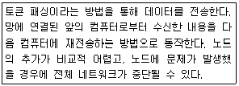
- 스타(Star)형
- 버스(Bus)형
- 링(Ring)형
- 망(Mesh)형
(정답률: 65%)
70. 다음 중 내부 네트워크를 구축할 때 사용하는 사설 IP 주소 대역으로 틀린 것은?
- 10.0.0.0 ∼ 10.255.255.255
- 172.16.0.0 ∼ 172.31.255.255
- 192.168.0.0 ∼ 192.168.255.255
- 224.0.0.0 ∼ 239.255.255.255
(정답률: 62%)
71. 다음에 대한 설명으로 알맞은 것은?
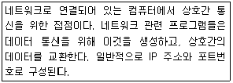
- ANSI
- IEEE
- ARP
- Socket
(정답률: 62%)
72. 다음 중 ( 괄호 )안에 들어갈 내용으로 알맞은 것은?
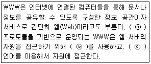
- ⓐ HTTP - ⓑ URL - ⓒ HTML
- ⓐ TCP - ⓑ INTERNET - ⓒ JAVA
- ⓐ UDP - ⓑ ARP - ⓒ PHP
- ⓐ SMTP - ⓑ ADDRESS - ⓒ RUBY
(정답률: 76%)
73. 다음 중 ftp 서비스에 대한 설명으로 틀린 것은?
- Server/Client 구조의 서비스이다.
- 텔넷과 동일하게 아이디와 패스워드를 이용하여 로그인 한다.
- ftp 명령 뒤에 호스트명 또는 IP 주소를 입력하여 리모트 시스템에 연결한다.
- telnet과 ssh와 같이 리모트 시스템을 제어할 때 주로 사용된다.
(정답률: 56%)
74. 다음에서 설명하는 인터넷 서비스로 알맞은 것은?
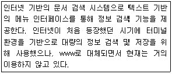
- USENET
- IRC
- HTML
- GOPHER
(정답률: 55%)
75. 다음 중 시스템에서 사용하는 네임 서버(DNS 서버)를 설정하는 파일로, DNS 서버의 IP 주소가 기입되는 파일로 알맞은 것은?
- /etc/nameserver.conf
- /etc/dns.conf
- /etc/hostname.conf
- /etc/resolv.conf
(정답률: 71%)
76. 다음 중 dig(Domain Information Groper) 명령을 이용하여 DNS로부터 도메인 정보를 확인하기 위해 사용되는 쿼리 타입과 설명으로 틀린 것은?
- all : 지정한 도메인의 모든 정보를 의미
- mx : 지정한 도메인의 메일서버 정보를 의미
- ns : 네임서버를 의미
- soa : SOA 정보를 의미
(정답률: 36%)
77. 다음 중 임베디드 리눅스의 장점에 대한 설명으로 틀린 것은?
- 소스가 공개되어 있어서, 변경 및 재배포가 용이하다.
- 별도의 로열티나 라이선스 비용이 없다.
- 리눅스를 사용한지 오래되었고, 커널이 안정적이다.
- 커널과 루트 파일 시스템 등에 상대적으로 적은 메모리를 차지한다.
(정답률: 62%)
78. 다음에서 설명하는 모바일 운영체제로 알맞은 것은?
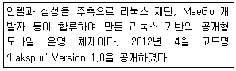
- Bada OS
- Android
- Tizen
- LiMo
(정답률: 58%)
79. 다음 중 XEN 가상화 기술에 대한 설명으로 틀린 것은?
- 전가상화와 반가상화를 모두 지원한다.
- 호스트 운영체제(Dom 0)는 리눅스만 지원하지만, 게스트 운영체제(Dom U) 리눅스, 윈도우즈등 다양한 운영체제를 폭넓게 지원한다.
- 케임브리지 대학교에서 시작한 프로젝트로 2002년 공개 프로젝트로 전환되었다.
- XEN 가상화 기술기반으로 개발된 제품은 Virtual Iron, Oracle VM Server 등이 있다.
(정답률: 41%)
80. 다음 중 공개형 서버 가상화 기술중 다양한 하이퍼 바이저를 통합 관리가 가능한 제3세대 서버 가상화 기술(클라우드 플랫폼)로 틀린 것은?
- OpenStack
- VirtualBox
- CloudStack
- Eucalyptus
(정답률: 50%)